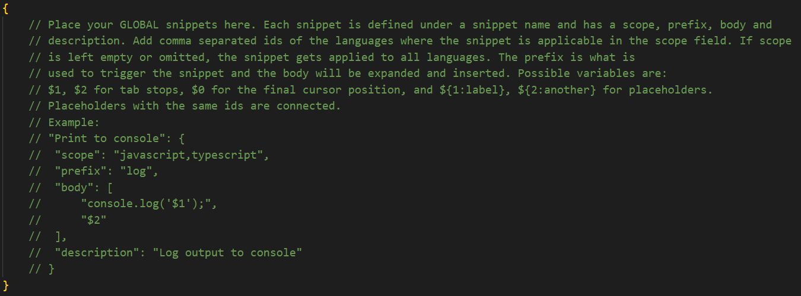

Сниппеты в VS Code
Как создать сниппет?
Открываем Файл - Настройки - Настроить пользовательские фрагменты кода. Открывается меню, где выше разделительной черты показывается список уже имеющихся пользовательских сниппетов. Чтобы создать новый нужно выбрать пункт - Настроить файл с глобальным фрагментом кода, после его в появившейся строке написать название будущего сниппета (название файла в котором будет хранится код).
Откроется файл, в ктором уже есть базовая структура сниппета.
Нам нужно раскомментировать (выделяем текст и нажимаем CTRL + /) все строки после Example:
- "Print to console": - название сниппета, которе будет показываться во всплывающей подсказке
- "scope": "javascript,typescript" - языки программирования, в которых можно использовать сниппет
- "prefix": "log" - сокращение, по которому можно развернуть сниппет
- "body": [] - массив, в котором будет код, который развернёт сниппет
- "description": - описание
Как писать код сниппета?
Синтаксис
- Каждая строка (открывающий и закрывающий тег) должна заключаться в кавычки ""
- После каждой строки должна ставиться запятая (так как это массив)
- Все кавычки, кроме тех, в которые заключается строка, должны записываться в виде: /"
- Чтобы добавить табуляцию к строкам, нужно перед тегом добавить: /t